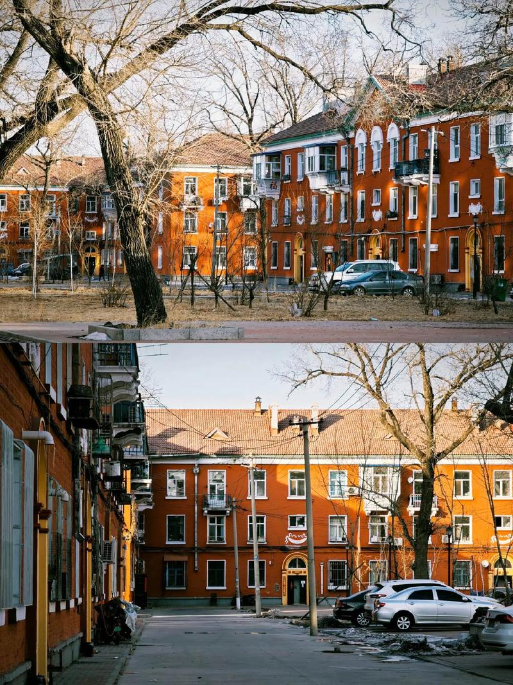
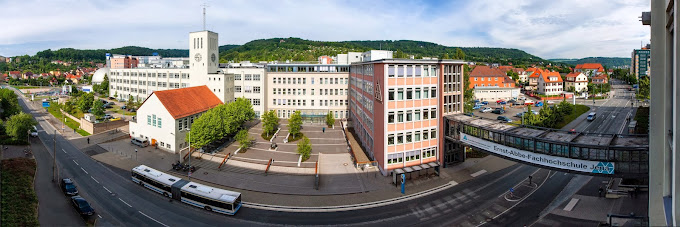

I grew up in a small district of Qiqihar, a city in Northeast China. My childhood was peaceful
and full of happiness - not rich in material things, but rich in warmth and simple joy. After
finishing primary school, I moved to downtown Qiqihar to attend a better middle school and high
school. I graduated from Qiqihar Experimental High School in 2019.

Fulaerji · Qiqihar · Northeast ChinaQiqihar Experimental High School
University Life
Coming from a small district, choosing to study in Shanghai was both a big step and a long-held
wish of mine. From 2019 to 2023, I studied Mechatronics at Tongji University. During those four
years, I made close friends, saw a wider world, and learned a great deal. I worked hard and
received several awards, including the National Scholarship. In my final year of undergraduate
study, I went to Germany as an exchange student at Ernst-Abbe-Hochschule Jena and obtained a
double degree.
Tongji University

Ernst-Abbe-Hochschule Jena
After graduating, I continued my studies at the Technical University of Munich, majoring in
Robotics, Cognition, and Intelligence. Studying abroad greatly broadened my perspective, and I
have met many inspiring and talented people along the way.
When I was a child, I was encouraged to study hard and get good grades - and that has shaped
much of my life. However, I gradually realized that academic performance alone is not enough.
To accomplish meaningful work in engineering, practical experience is essential. That is one
of the reasons I created this page - to document what I've learned along the way.
Since August 2023, I have been working at ChenYang Technologies as a part-time research intern,
focusing on developing embedded hardware and software to improve the measurement accuracy of
Hall-effect current sensors for small measuring ranges. Through this experience, I gained
knowledge in circuit design, prototyping, embedded programming, and signal processing.
PCB Designed and Soldered by Me
During my Master's studies, I also completed two major course projects. The first involved
improving a human motion generation model, where we replaced text-based input with image-based
input. The second project involved controlling a 7-DOF Franka robotic arm using a remote haptic
device. In that project, I learned about Cartesian impedance control, force feedback, as well as
Gaussian Mixture Models and Gaussian Mixture Regression.
Recently, I have also started practicing LeetCode problems to improve my programming and
problem-solving skills - not necessarily for building large projects or doing researches,
but to strengthen my fundamentals and stay sharp, as I don't have a strong computer science
background. It is fascinating to see how elegant algorithms and well-designed data structures
can solve complex problems efficiently.